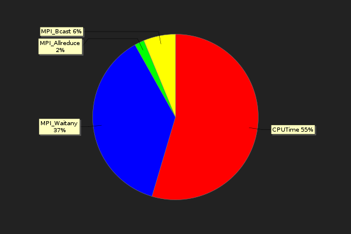
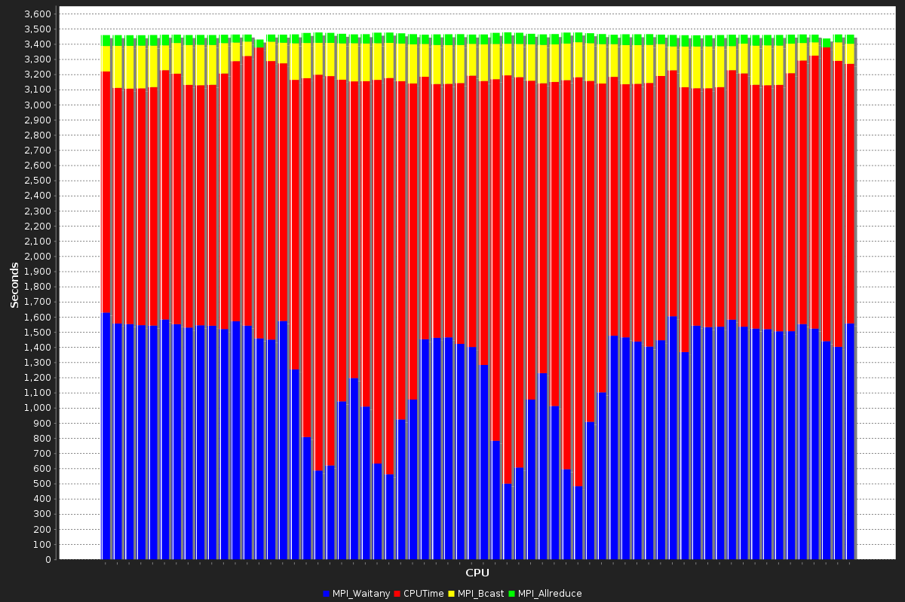
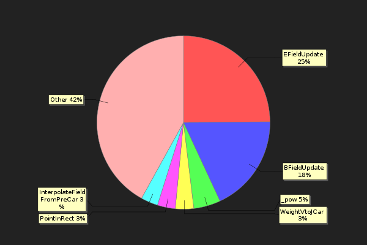
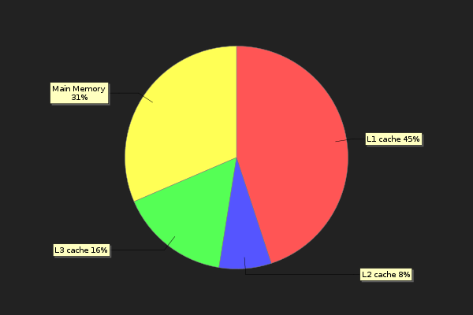

Test Case Summary - diamond
| Application:icepic | Data Set:standard | CPU Count:64 |
Total Processing and Message Passing Time
|  | ||||||||||||||||
|
Per-Task Processing and Message Passing Time
Imbalanced MPI Functions:
CPUTime, MPI_Allreduce, MPI_Barrier, MPI_Bcast, MPI_Finalize, MPI_Irecv, MPI_Issend, MPI_Recv, MPI_Reduce, MPI_Send, MPI_Ssend, MPI_Waitall, MPI_WaitanyFunctions With Highest Processing Time
| Function Name | Run Time | Avg. L1 Hit rate | Avg. L2 Hit rate | Avg. L3 Hit rate |
|---|---|---|---|---|
| EFieldUpdate | 470.80 | 93.31% | 94.41% | 94.60% |
| BFieldUpdate | 344.10 | 83.29% | 86.82% | 87.18% |
| _pow | 95.12 | 99.87% | 100.00% | 100.00% |
| WeightVtoJCar | 64.79 | 96.27% | 97.32% | 98.91% |
| PointInRect | 63.28 | 99.43% | 99.99% | 99.99% |
| InterpolateFieldFromPreCar | 60.45 | 96.13% | 98.64% | 99.70% |
Analysis of Data Movement
Our analysis shows that your application is spending its time waiting for memory in the following places: | Cache Level | Time Spent | % Time |
|---|---|---|
| L1 | 806.46 | 44.95% |
| L2 | 135.82 | 7.57% |
| L3 | 287.30 | 16.01% |
| Main Mem. | 564.54 | 31.47% |